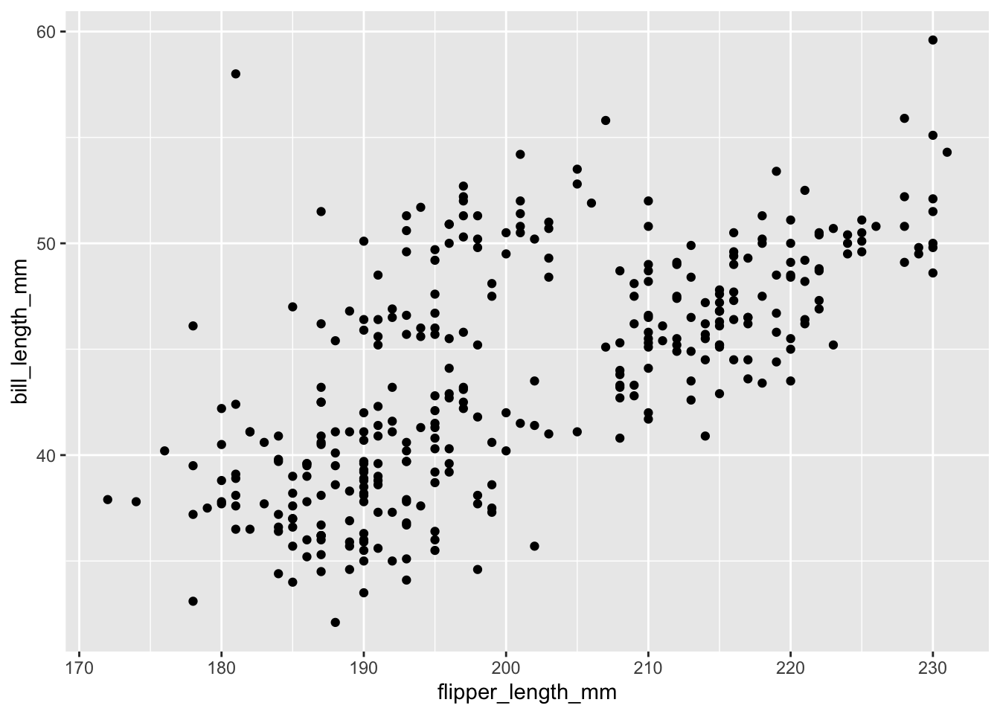
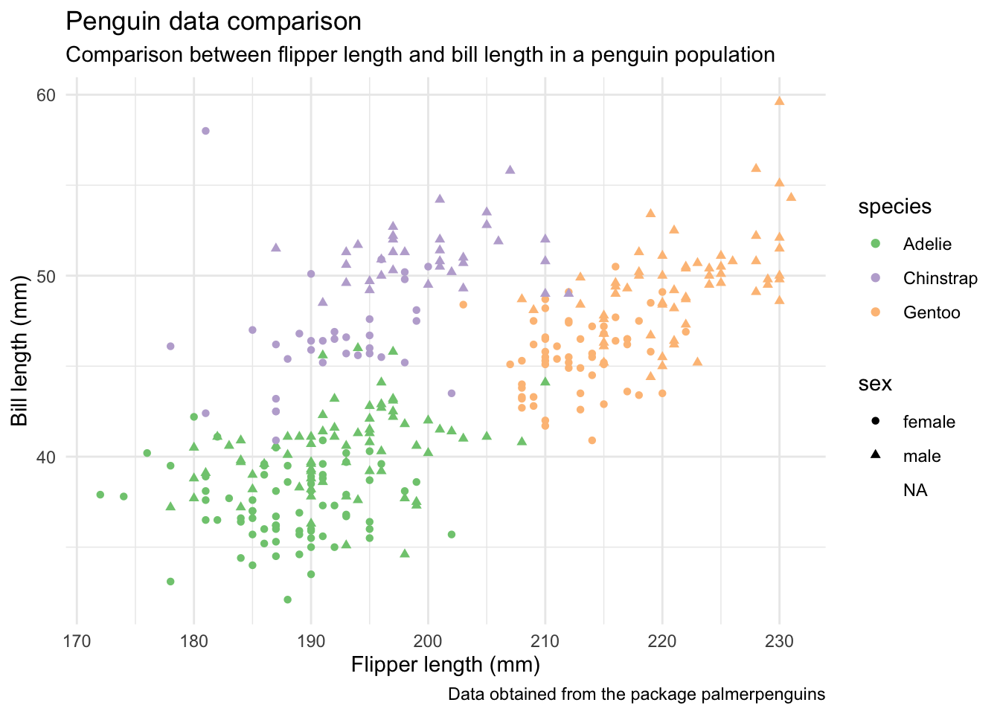

1 + 1[1] 2En esta primera clase, vamos a explorar brevemente el lenguaje de programación R, conocer algunas de sus características y generar una visualización a partir de una tabla!
Desde la consola, es posible ejecutar comandos directamente. Por ejemplo podemos hacer operaciones aritmeticas
Tambien podemos generar números de manera secuencial
Todo esto lo estuvimos haciendo desde la consola, pero no es la manera mas habitual de trabajar, ni tampoco la mejor práctica. Lo ideal es trabajar todo desde un script (básicamente un archivo de texto), el cual nos permite documentar el trabajo realizado.
Para crear un nuevo script, podemos ir al boton verde de la parte superior izquierda, y elegir la opción R script. Una vez que creamos un script, podemos ir dejando en ese documento los comandos que vamos a ir utilizando.
En R encontramos 4 tipos de datos atómicos con los cuales podemos crear vectores:
numérico: enteros y reales
12
12.5caracteres
"hola, soy un texto!"lógicos
TRUE
FALSEcomplejos
1 + 3iTambién existen dos tipos especiales que se pueden mezclar con los anteriores, NULL para cuando no existe un valor (por ejemplo, para declarar una variable sin asignar un valor) y NA (not assigned) cuando no hay una observación en una tabla.
El uso de NA es importante, porque permite mezclarse con otros tipos. Cualquier calculo que involucre NA va a resultar en NA. Por ejemplo:
El resultado es NA, porque R no sabe cual es la respuesta. Esto es igual si queremos identificar el número máximo en una lista de números:
Pero algunas funciones, pueden ignorar ese NA con el parametro adecuado. Por ejemplo:
Los resultados de las operaciones, calculos, etc, pueden ser guardados en variables para ser utilizados. Esto se hace con el operador <-. También es posible utilizar el operado =, pero en general se utiliza <-. Por ejemplo:
Y ahora podemos llamar la variable
Es posible hacer operaciones directamente con las variables:
Un vector es una coleccion ordenada de elementos, que pueden ser del mismo tipo o combinados. La función que se utiliza para generar los vectores es c. Por ejemplo:
También es posible crear un vector de caracteres
y combinar diferentes tipos:
Podemos acceder a los elementos individuales de un vector usando [] y el número del elemento. Es importante recordar que la númeracion parte desde 1 (versus Python, que parte desde 0).
Tambien podemos asignar nombres a los elementos de un vector. Por ejemplo:
uno dos tres
1 2 3 Y podemos acceder por nombre:
incluso usando un vector
Aún cuando R nos permite hacer muchos análisis sin tener que instalar librerias, existe una gran colección de paquetes que nos permiten extender las capacidades de R de gran manera para hacer análisis de datos, modelamiento, visualización, etc.
Información sobre paquetes de Rstudio se pueden ver aqui y el repositorio central de paquetes, CRAN, con una lista completa de paquetes aqui.
Para instalar una libreria disponible en CRAN se puede hacer de la siguiente manera. En este ejemplo vamos a instalar dos paquetes que vamos a utilizar en la siguiente sección, asi que hay que ejecutar este comando.
Esto va a instalar en nuestro computador o maquina en la que estemos trabajando, la libreria. Para poder utilizar esta libreria en nuestro script o sesión de análisis, es necesario importarla. Esto se hace de la siguiente manera:
En las próximas clases vamos a mirar mas en detalle como podemos visualizar datos, pero para entusiasmar, vamos a hacer una pequeña introducción.
Primero que nada tenemos que llamar a las librerias a utilizar:
Esto va a llamar a la libreria tidyverse y un paquete de datos llamado palmerpenguins el cual contiene datos que vamos a utilizar para visualizar.
Vamos a llamar a una tabla llamada penguins y asignarla a una variable.
y podemos visualizar la tabla
# A tibble: 344 × 8
species island bill_length_mm bill_depth_mm flipper_…¹ body_…² sex year
<fct> <fct> <dbl> <dbl> <int> <int> <fct> <int>
1 Adelie Torgersen 39.1 18.7 181 3750 male 2007
2 Adelie Torgersen 39.5 17.4 186 3800 fema… 2007
3 Adelie Torgersen 40.3 18 195 3250 fema… 2007
4 Adelie Torgersen NA NA NA NA <NA> 2007
5 Adelie Torgersen 36.7 19.3 193 3450 fema… 2007
6 Adelie Torgersen 39.3 20.6 190 3650 male 2007
7 Adelie Torgersen 38.9 17.8 181 3625 fema… 2007
8 Adelie Torgersen 39.2 19.6 195 4675 male 2007
9 Adelie Torgersen 34.1 18.1 193 3475 <NA> 2007
10 Adelie Torgersen 42 20.2 190 4250 <NA> 2007
# … with 334 more rows, and abbreviated variable names ¹flipper_length_mm,
# ²body_mass_g
# ℹ Use `print(n = ...)` to see more rowsEl paquete que vamos a utilizar para visualizar se llama ggplot, el cual es parte de tidyverse. Así que ya esta instalado cuando hicimos la llamada a la libreria tidyverse al inicio.
Primero vamos a construir un gráfico en el cual vamos a visualizar el largo de la aleta versus el largo del pico del pinguino.
Warning: Removed 2 rows containing missing values (geom_point).
En este comando lo que estamos haciendo es:
data = tabla_pinguinosaes(x=flipper_length_mm, y=bill_length_mm)geom_point()Como podemos diferencias variables dentro de nuestras columnas. Agregando en la opciones de estética del gráfico dos nuevas variables: color=species, shape=sex. En este caso, asignamos color en base a los elementos distintos de la columna species y forma de los puntos en base a la columna sex. Así, el código queda:
Ya tenemos un gráfico inicial que muestra la comparación que nos interesa y ahora podemos editar para que se vea un poco mejor y no con los colores y diseño por defecto de R. Esto lo podemos hacer modificando el theme del gráfico. Mas adelante vamos a ver el detalle de como modificar diferentes componentes, pero por ahora podemos hacer un cambio general agregando el comando theme_minimal().
En los colores, también los podemos modificar a gusto. Por el momento vamos a utilizar una paleta de colores diferente con el comando scale_color_brewer(type = "qual"). En este caso le pasamos como parametro al comando scale_color_brewer la opción type = “qual”. Con esto definimos que la escala de colores es cualitativa (versus una escala cuantitativa).
Así el comando nos queda ahora como:
Finalmente, vamos a cambiar el texto que describe los ejes X e Y, y agregar algo de texto informativo.
Esto lo vamos a hacer agregando el comando labs y definiendo las diferentes opciones:
labs(x="Flipper length (mm)",
y="Bill length (mm)",
title = "Penguin data comparison",
subtitle = "Comparison between flipper length and bill length in a penguin population",
caption = "Data obtained from the package palmerpenguins"Y podemos agregarlo al gráfico.
ggplot(data = tabla_pinguinos,
aes(x=flipper_length_mm,
y=bill_length_mm,
color = species,
shape = sex)
) +
geom_point() +
theme_minimal() +
scale_color_brewer(type="qual") +
labs(x="Flipper length (mm)",
y="Bill length (mm)",
title = "Penguin data comparison",
subtitle = "Comparison between flipper length and bill length in a penguin population",
caption = "Data obtained from the package palmerpenguins")Warning: Removed 11 rows containing missing values (geom_point).